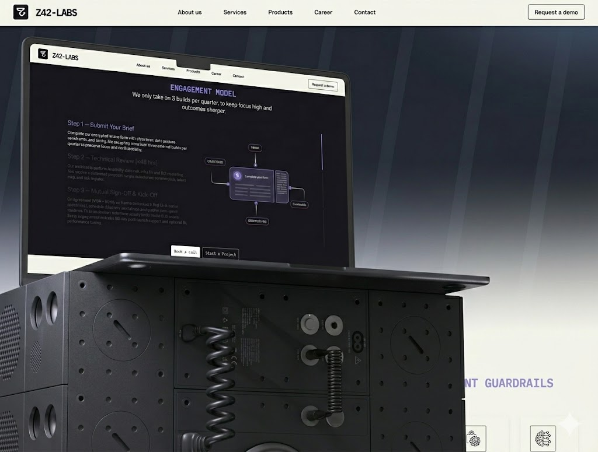
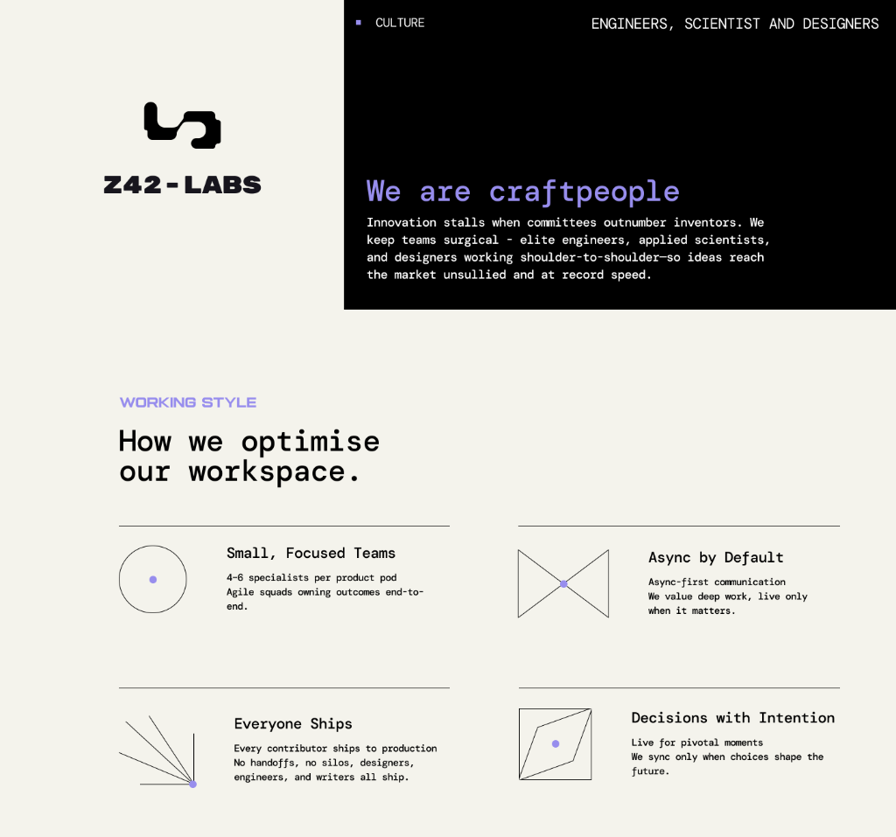
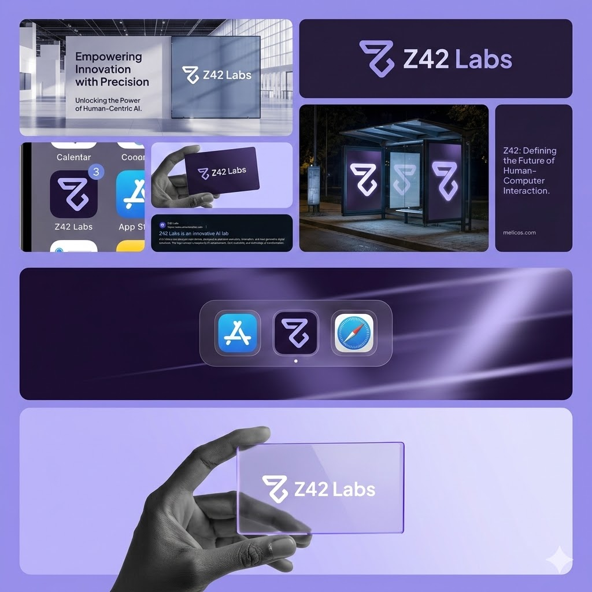

We are Craftspeople
Innovation stalls when committees outnumber inventors. The UX and branding strategy for Z42 strips away the noise. Clean lines, dark themes, and an intentional lack of fluff allow the underlying AI engine capabilities to shine.

